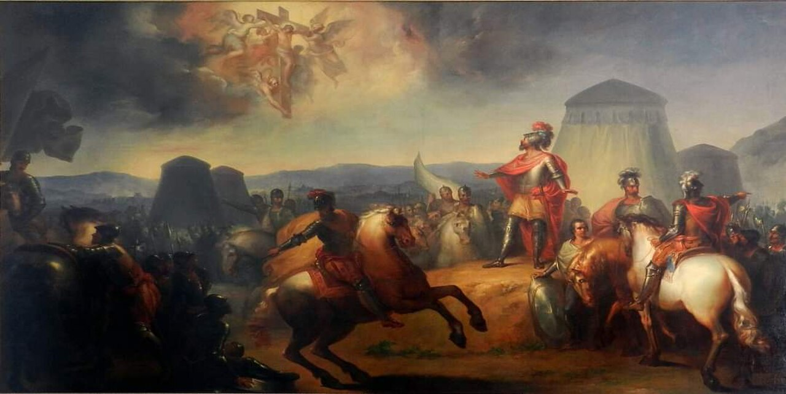
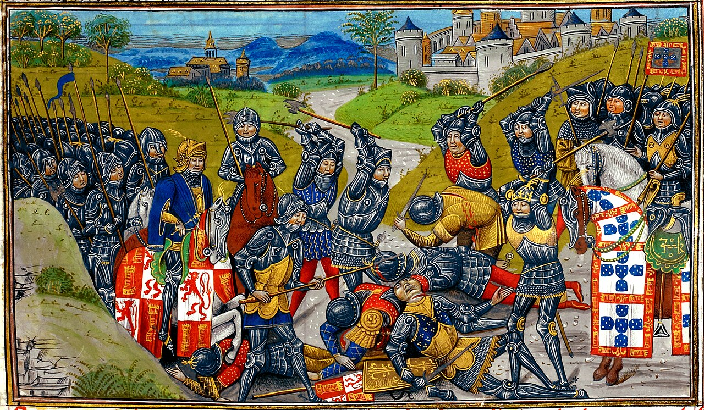

Portekiz'in Köklü ve Şanlı Tarihi
Antik Lusitanya savaşçılarından krallığın doğuşuna, İberya'nın kaderini değiştiren meydan muharebelerinden okyanusları fetheden Keşifler Çağı'na ve silahlara karanfillerin takıldığı barışçıl demokrasi devrimine uzanan 900 yıllık bağımsızlık destanı.
Portekiz Tarihini Şekillendiren Önemli Savaşlar
Portekiz ulusunun bağımsızlığını kanıtladığı, sınırlarını koruduğu ve dünya tarihinin seyrini değiştirdiği kritik meydan muharebeleri.
Ourique Muharebesi (1139)
25 Temmuz 1139'da gerçekleşen Ourique Muharebesi, Portekiz ulusunun doğuş anı olarak kabul edilir. Kont Afonso Henriques, Alentejo bölgesinde sayıca kat kat üstün olan 5 Mağribi (Müslüman) kralının birleşik ordusunu mucizevi bir taktikle kesin bir hezimete uğratmıştır.
Bu tarihi zaferin ardından askerleri Afonso Henriques'i kalkanlarının üzerinde havaya kaldırarak ilk "Portekiz Kralı (I. Afonso)" ilan etmiştir. Portekiz Bayrağı'nın merkezindeki 5 Mavi Kalkan (Quinas), bu savaşta yenilgiye uğratılan 5 kralı simgeler.

Aljubarrota Muharebesi (1385)
14 Ağustos 1385'te Portekiz, tarihinin en büyük bağımsızlık sınavını verdi. Kastilya (İspanya) Kralı I. Juan, Portekiz tahtını ele geçirmek için 31.000 kişilik dev bir orduyla Lizbon'a yürüdü. Portekiz Kralı I. João ve dahi komutanı Nuno Álvares Pereira, müttefik İngiliz okçularıyla birlikte yalnızca 6.500 askere sahipti.
Dahi bir kare savunma taktiğiyle Kastilya süvarileri bataklık hendeklere çekilerek 1 saat içinde bozguna uğratıldı. Portekiz, İspanyol boyunduruğundan kurtuldu. Kral I. João, Tanrı'ya şükran için bugün UNESCO Mirası olan ünlü Batalha Manastırı'nı inşa ettirdi.

Alcácer Quibir (Üç Kral Savaşı)
Fas çöllerinde yapılan savaşta genç Portekiz Kralı I. Sebastião ve tüm ordusu kayboldu. Varis kalmayınca Portekiz 60 yıl boyunca İspanya Kralı II. Felipe'nin hakimiyetine (İber Birliği) girdi.
Restorasyon Savaşı (Guerra da Restauração)
İspanyol boyunduruğuna karşı başlatılan ulusal ayaklanma 28 yıl sürdü. IV. João tahta çıkarak Bragança Hanedanı'nı kurdu ve Lizbon Antlaşması ile Portekiz'in tam bağımsızlığı İspanya'ya kabul ettirildi.
Yarımada Savaşı & Napolyon İstilaları
Napolyon Bonapart, İngiltere ile ticaretini kesmeyen Portekiz'i 3 kez işgal etti. Kraliyet ailesi donanmayla Brezilya'ya taşındı. Torres Vedras savunma hatlarıyla Fransız orduları geri püskürtüldü.
En Eskiden Yeniye: Kronolojik Portekiz Tarihçesi
Binlerce yıllık kadim geçmişten günümüz modern Avrupa demokrasisine uzanan adım adım tarih serüveni.
Antik Lusitanya & Roma Hakimiyeti
İber Yarımadası'nın batısında yaşayan savaşçı Lusitanyalılar, efsanevi liderleri Viriathus önderliğinde Roma lejyonlarına yıllarca direndi. Roma hakimiyetiyle birlikte bölgeye Latin dili (Portekizce'nin kökeni), taş yollar, su kemerleri ve zeytincilik kültürü yerleşti.
Endülüs & Mağribi (İslam) Dönemi
Tarık bin Ziyad'ın İberya'ya geçmesiyle Portekiz toprakları 400 yılı aşkın süre Endülüs medeniyetinin parçası oldu. Güneydeki "Algarve" (El-Garb / Batı) başta olmak üzere sulama kanalları, narenciye tarımı, mimari çiniler (Azulejos) ve Portekizce'ye 1.000'den fazla Arapça kelime miras kaldı.
Portekiz Krallığı'nın Doğuşu & Reconquista
1139 Ourique zaferiyle I. Afonso Henriques bağımsızlığını ilan etti. 1147'de Haçlıların desteğiyle Lizbon fethedildi. 1249'da güneydeki Algarve'nin alınmasıyla Reconquista (Yeniden Fetih) tamamlandı ve Avrupa'da bugünkü sınırlarına en erken ulaşan ülke oldu.
Büyük Coğrafi Keşifler Çağı (İmparatorluğun Altın Çağı)
Denizci Henrique'nin başlattığı keşif hamlesi dünyayı değiştirdi:
- 1415: Kuzey Afrika'da Ceuta'nın fethiyle keşifler başladı.
- 1488: Bartolomeu Dias Afrika'nın güney ucunu (Ümit Burnu) aştı.
- 1498: Vasco da Gama deniz yoluyla doğrudan Hindistan'a ulaştı.
- 1500: Pedro Álvares Cabral Brezilya kıyılarına ayak bastı.
1755 Büyük Lizbon Depremi & Pombal Dönemi
1 Kasım Tüm Azizler Günü'nde meydana gelen 8.7 büyüklüğündeki dev deprem, ardından gelen 15 metrelik tsunami ve 5 gün süren yangınlar Lizbon'un %85'ini yerle bir etti. Başbakan Markiz de Pombal tarihe geçen şu emri verdi: "Ölüleri gömün, yaşayanları doyurun!". Lizbon, dünyanın ilk depreme dayanıklı ızgara planlı modern kenti (Baixa Pombalina) olarak küllerinden yeniden doğdu.

Cumhuriyet Devrimi (Monarşinin Yıkılışı)
Halk ayaklanması ve donanma desteğiyle 800 yıllık Portekiz Monarşisi devrildi ve Birinci Portekiz Cumhuriyeti kuruldu. Kraliyetin mavi-beyaz bayrağı kaldırılarak bugünkü yeşil-kırmızı ulusal bayrak kabul edildi.
Karanfil Devrimi (Revolução dos Cravos)
48 yıl süren António de Oliveira Salazar'ın otoriter diktatörlük rejimi (Estado Novo), genç subayların (MFA) başlattığı kansız askeri darbeyle devrildi. Sokaklara dökülen halk, askerlerin tüfeklerinin namlularına kırmızı karanfiller taktı. Tek bir kurşun sıkılmadan tam demokrasiye geçildi, sömürgelere bağımsızlık verildi.
Avrupa Birliği Üyeliği ve Modern Çağ
1986'da Avrupa Topluluğu'na (AB) katılan Portekiz, 2002'de Euro para birimine geçti. Günümüzde dünyanın en güvenli ilk 10 ülkesi arasında yer almakta; teknoloji, turizm, sürdürülebilir yeşil enerji ve küresel diplomaside öncü rol oynamaktadır.
Portekiz Tarihine Dair Büyüleyici Gerçekler
Dünya tarihini derinden etkileyen ve çoğu kişinin bilmediği tarihi kayıtlar.